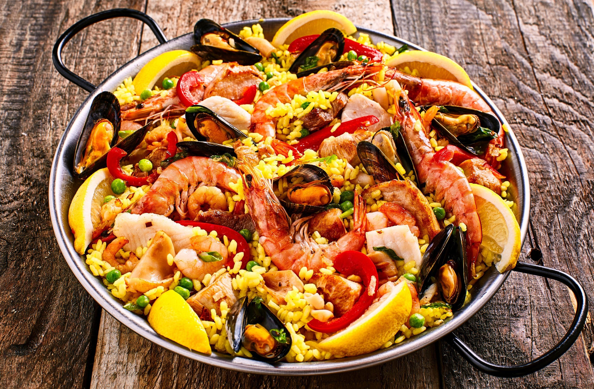

3 heerlijke spicy recepten voor de hele familie

Ingredienten
- Basmati rijst - 500g
- safraan poeder
- rode & gele paprikas - 3/4 stuks
- Kip filets - 250g
- Kippen bouillon
- water
- mosselen - 250g
Bereiding
- Kook de kipfilets in een hete pan
- Snijd ondertussen de paprikas
- Kook het basmati rijst in hete water in een pan
- voeg de kipbouillon in het water
- Laat alles voor een momentje koken
- Voeg safraan en je kip erbij
- smakelijk!